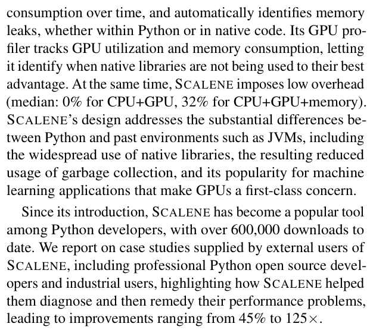
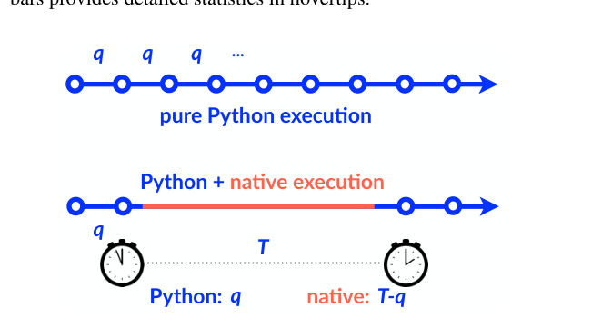
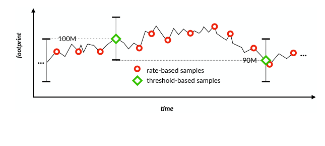
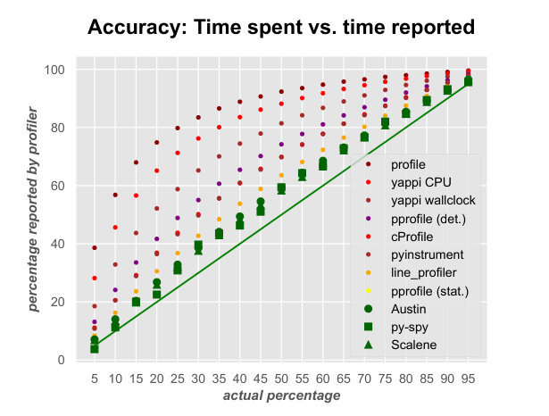
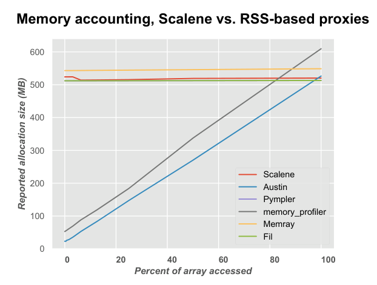
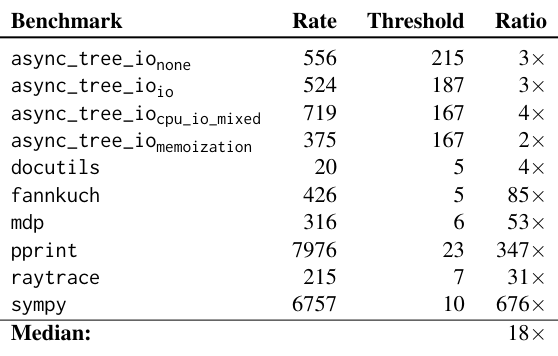
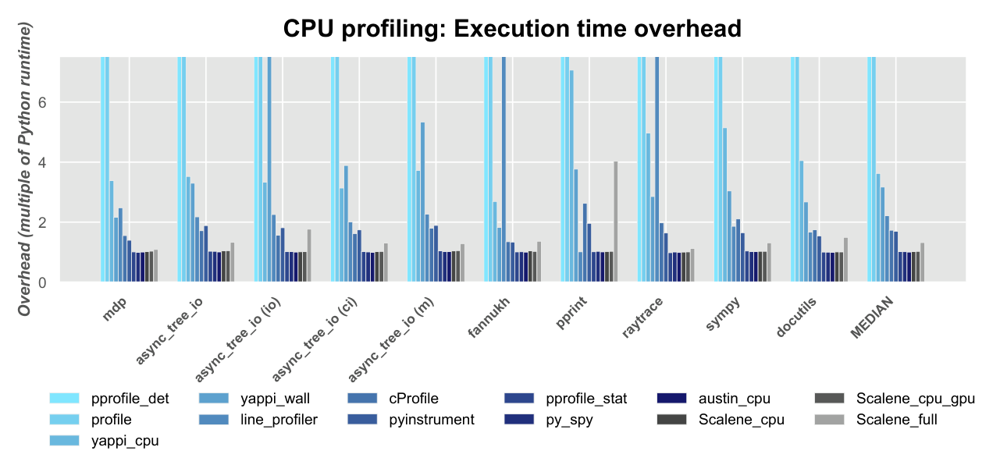
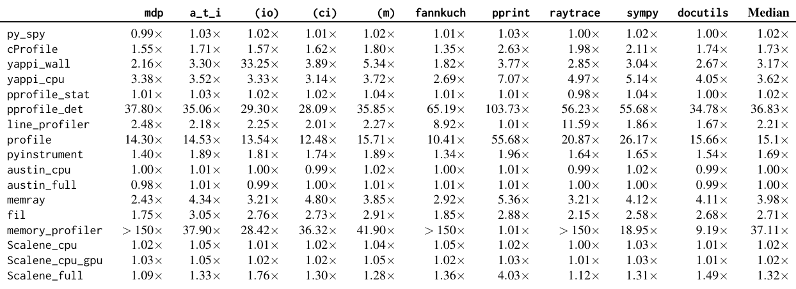
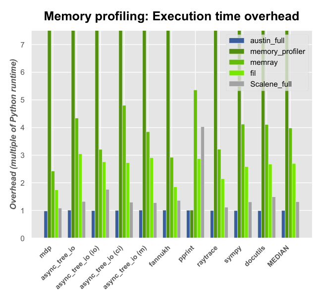

Triangulating Python Performance Issues with Scalene
This page was written by an AI model to give a high-level overview of the paper. Please check the paper for detail: USENIX.
Python is now one of the most widely used languages, but CPython (the standard implementation) runs pure Python code one to two orders of magnitude slower than equivalent native code, and Python objects consume far more memory than their native counterparts (an integer costs 4 bytes in C but 28 bytes in Python; a short string costs 2 bytes in C but 50 in Python). Because of this, the dominant optimization strategy for Python programmers is to find the hot or memory-heavy pure-Python code and replace it with calls into native libraries such as NumPy, scikit-learn, or TensorFlow. Doing that well requires a profiler that can tell a programmer, line by line, whether time or memory is being spent in Python or in native code.
Past Python profilers fall short of this. Almost all of them report either CPU time or memory, never both at once. The deterministic (tracing) CPU profilers, built on Python's sys.settrace facility, instrument every line and function call, which the paper shows introduces a severe "function bias" that can misreport a function's share of runtime by over 50 percentage points. Naive sampling-based CPU profilers avoid that bias but hit a different wall: CPython (like Perl and Ruby) only delivers OS signals to the main thread, and defers delivery until the interpreter loop regains control at specific bytecodes. During a call into a native library, the interpreter does not regain control, so no timer signal fires, and a sampling profiler sees apparently zero time spent in that call, and zero time in any other thread. Memory profilers have their own problem: several widely used tools approximate allocation using resident set size (RSS), which tracks pages touched by the OS, not objects allocated by the program, and can wildly under- or over-report true memory use.
Scalene's key idea is to turn each of these obstacles into a signal. For CPU time, it treats Python's own signal-deferral behavior as information: if a periodic timer interrupt arrives exactly on schedule, that interval was spent inside the interpreter; if it arrives late, the delay can only be explained by time spent executing outside the interpreter (native code), so that delay is attributed to native time. For memory, instead of sampling allocation calls at a fixed rate (which is what nearly every other sampling memory profiler does, from Android and Chrome to Go and tcmalloc), Scalene introduces threshold-based sampling: it samples only when the running difference between bytes allocated and bytes freed crosses a fixed threshold, so sampling tracks changes in footprint rather than allocator traffic.
Mechanically, Scalene combines a custom signal handler and stack walker for CPU attribution (extended to threads via monkey-patched blocking calls and bytecode disassembly) with a shim memory allocator, injected via library interposition, that implements threshold-based sampling, a sampling-based leak detector built on the same threshold crossings, a new "copy volume" metric obtained by interposing on memcpy, and GPU utilization and memory sampling piggybacked on the same CPU-sampling clock.
Across the ten longest-running pyperformance benchmarks, Scalene's reported median runtime overhead is 0% for CPU+GPU profiling and 32% for full CPU+GPU+memory profiling (the paper's detailed measurements put these at 2% and 30% respectively), competitive with the fastest prior profilers despite reporting far more information. Its memory reports are accurate to within 1% of ground truth on a synthetic allocation test, matching the best interposition-based profiler and beating RSS-based ones by a wide margin. Threshold-based sampling needs as few as 2x and as many as 676x fewer samples than rate-based sampling (median 18x) on the same benchmarks. Case studies from external users (Rich, Pandas, NumPy, Semantic Scholar) report improvements from 45% to 125x after using Scalene to locate the problem; the tool had over 675,000 downloads at the time of publication.

Key takeaways
- Past Python profilers profile either CPU or memory, rarely both, and most either suffer a tracing-induced "function bias" or (for sampling profilers) wrongly report zero time for native code and child threads.
- Scalene exploits CPython's deferred signal delivery during native calls: a delayed timer interrupt is reinterpreted as time spent in native code, giving accurate Python-vs-native attribution without instrumenting every line.
- Threshold-based memory sampling (sample when |allocated − freed| crosses a fixed byte threshold) replaces rate-based sampling, tracking footprint changes with far fewer, less biased, and more repeatable samples.
- A sampling leak detector piggybacks on the same threshold crossings, scoring allocation sites with Laplace's Rule of Succession instead of requiring manual heap-snapshot diffing.
- Scalene adds two new capabilities absent from prior tools: a "copy volume" metric that surfaces hidden copies across the Python/native or CPU/GPU boundary, and simultaneous GPU utilization and memory profiling, all with overhead competitive with the fastest prior CPU-only profilers.
From signal timing to a full CPU, memory, copy-volume, and GPU profile
Why Python resists ordinary profiling, how Scalene infers Python vs. native time, its threshold-based memory sampler, leak detector, copy-volume and GPU profiling, and its UI.
1 · Why Python is hard to profile accurately
Two quirks of CPython's signal handling, shared with other scripting languages such as Perl and Ruby, undermine ordinary sampling profilers. First, signals are delivered only to the main thread, never to child threads. Second, signal delivery is deferred: the interpreter only checks for and delivers pending signals when it regains control of execution, which happens at specific points such as jump bytecodes. The consequence is that while the interpreter is blocked inside a call into a native library, no timer interrupt fires, so a profiler built on ordinary sampling will attribute no time at all to that call, no matter how long it actually ran, and will attribute no time to any work happening in other threads.
2 · CPU profiling: turning signal delay into Python vs. native time

- Scalene records the current virtual time (
time.process_time()) at each CPU timer interrupt, using a target interval q (the quantum). - At the next interrupt, it computes T, the actual elapsed virtual time since the previous one.
- It attributes q (the requested interval) to the Python counter for the currently executing line, since that much time necessarily passed while the interpreter was checking for signals.
- It attributes the remainder, T − q, to the native counter for that line, since any delay beyond the requested interval can only come from time spent outside the interpreter loop (at least in virtual time).
- On every signal, Scalene walks the Python call stack, skipping interpreter and library frames, to find the line of profiled source code to credit.
This gives line-level Python-vs-native attribution in the main thread without instrumenting every call or line.
3 · Extending attribution to threads
The timing trick above only works for the main thread, since child threads never receive the interrupt at all. Scalene restores visibility into threads with three techniques used together:
- Monkey patching. Scalene redefines blocking calls such as
threading.jointo always use a timeout, set to Python's own thread-switch interval (sys.getswitchinterval()), forcing the main thread to yield and let signals through even while it would otherwise be blocked. - Per-thread status tracking. Each thread gets a status flag, "sleeping" or "executing," set to sleeping before Scalene issues a patched blocking call and reset to executing when that call returns; only executing threads are credited with time.
- Bytecode disassembly. On every signal, Scalene enumerates all running threads (
threading.enumerate()) and inspects each one's stack frame (sys._current_frames()). Using thedismodule, it checks whether the thread's current bytecode is a call instruction (CALL_FUNCTION,CALL_METHOD, or, from Python 3.11,CALL). A thread "stuck" on that instruction for the interval is deemed to be executing native code; otherwise it is deemed to be running Python.
4 · Interposing on allocation
To profile memory, Scalene inserts its own shim allocator (built on the Heap Layers infrastructure) ahead of both the system allocator and Python's own internal one, via library interposition (LD_PRELOAD on Linux, DYLD_INSERT_LIBRARIES on macOS) and Python's custom allocator hook (PyMem_SetAllocator). Intercepting both lets Scalene separately attribute native allocations (from libraries) and Python-object allocations (from the interpreter). Because Python's own allocator sometimes calls into the system allocator internally, Scalene sets a thread-local flag marking "inside the allocator"; shim calls made while that flag is set skip profiling and simply forward to the underlying allocator, avoiding double counting.
5 · Threshold-based memory sampling

Most prior sampling memory profilers (on Android, Chrome, Go, Google's tcmalloc, and in Java's TLAB-based sampling) use rate-based sampling: each byte allocated or freed is treated as a Bernoulli trial with a fixed probability of triggering a sample, implemented efficiently with a countdown counter drawn from a Poisson or geometric distribution.
- Scalene instead maintains running totals of bytes allocated (A) and bytes freed (F).
- Whenever |A − F| crosses a fixed threshold T (currently a prime number slightly above 10 MB, chosen prime to avoid aliasing with regular allocation strides), it appends a sample recording the current state and resets the counters.
- Because sampling now depends on net footprint change rather than raw allocation traffic, it filters out the enormous number of short-lived objects the interpreter itself creates, and it is deterministic rather than probabilistic, so it reliably captures every footprint change above the chosen granularity.
Each sample briefly enables Python's tracing (PyEval_SetTrace) just long enough to attribute the sample to a line and record the Python/native split, then disables tracing again. The results (sample counts and accuracy) are evaluated in the Evaluation tab.
6 · Memory leak detection via Laplace's Rule of Succession
The standard way to find a Python memory leak is to activate tracemalloc, take heap snapshots at different points, and manually diff them; the paper measures this as slowing applications by at least 4x just to activate. Scalene instead piggybacks leak detection directly on threshold-based sampling:
- Whenever growth crosses a new maximum footprint, Scalene records the object responsible as a tracked sample.
- Every subsequent
freecall does one cheap pointer comparison to check whether that specific tracked object has been reclaimed. - At the next new-maximum crossing, Scalene updates a leak score for the allocation site: a pair (frees, mallocs), incrementing mallocs each time tracking starts and frees only if the previous tracked object was reclaimed.
- The leak probability is computed from this history using Laplace's Rule of Succession: 1 − (frees + 1) / (mallocs − frees + 2).
- Scalene reports a line as leaking only if its probability exceeds 95% and overall memory growth is at least 1%, and ranks reported leaks by an estimated leak rate (average memory at that line divided by elapsed time).
7 · Copy volume
Scalene's shim library also interposes on memcpy, which Python invokes both for ordinary copying and for copies across the Python/native boundary or to and from a GPU. Because copy volume only ever increases (unlike footprint, which can shrink), threshold-based and rate-based sampling are equivalent here, so Scalene uses conventional rate-based sampling for copies, at a rate set as a multiple of the allocation sampling rate. The resulting per-line metric, megabytes-per-second of copying, is new to Python profiling and surfaces costly, often inadvertent, copies (for example, Pandas operations such as concat and chained indexing that copy data rather than returning a view).
8 · GPU profiling
On systems with an NVIDIA GPU, Scalene piggybacks GPU sampling on its existing CPU-sampling clock: every time it takes a CPU sample, it also reads the current GPU memory use and utilization and attributes them to the currently executing line. Where possible it uses per-process-ID GPU accounting for accuracy on a shared GPU, offering to enable this at startup (which requires one superuser-privileged invocation).
9 · Keeping the UI tractable
Scalene's primary interface is a web-based report (plus a non-interactive CLI) that shows, per line and per function, the CPU time split into Python/native/system/GPU, average and peak memory split into Python/native, a memory-over-time trend, copy volume, and GPU utilization and memory. Two mechanisms bound the size of this report: each line's memory-over-time series is first simplified with the Ramer-Douglas-Peucker curve-reduction algorithm (tuned to roughly 100 points), then randomly downsampled to exactly 100 points if RDP alone did not reduce it enough; and only lines responsible for at least 1% of CPU/GPU time or 1% of total memory are shown (along with the surrounding lines), which caps any profile at 300 lines. The prototype is about 3,500 lines of Python, 1,700 lines of C++, and 800 lines of JavaScript, and runs on Linux, Windows, and macOS for Python 3.8 and later.
10 · Where this is measured
Accuracy and overhead for all of these mechanisms, relative to past CPU-only and memory-only profilers, are measured in the Evaluation tab.
Evaluation
What the paper measures, its key figures and tables, and what each shows.
All experiments run on a single machine and report the interquartile mean of 10 runs. Workloads are the ten longest-running benchmarks from pyperformance, the standard Python benchmark suite, each looped to run for at least 10 seconds; benchmarks were lightly modified to add @profile decorators some profilers require and a forced exit so py-spy produces output.
| What | Value in the paper |
|---|---|
| Platform | 8-core AMD Ryzen 7 at 4674 MHz, 32 GB RAM, NVIDIA GeForce RTX 2070, Linux 5.13.0-35-generic; g++ 9; CPython 3.10.9 |
| Workloads | Top 10 most time-consuming pyperformance benchmarks (Table 1), looped to exceed 10s each |
| Baselines | Deterministic: profile, cProfile, pprofile (det.), line_profiler, yappi (wall/CPU). Sampling: pprofile (stat.), py-spy, pyinstrument, Austin. Memory: memory_profiler, Fil, Memray, Austin. Scalene run in CPU-only, CPU+GPU, and full (CPU+GPU+memory) modes |
| Metrics | Accuracy (reported vs. ground-truth time or allocation size), runtime overhead as a multiple of unprofiled Python, number of samples taken, profiler log file size |
Trace-based CPU profilers distort time via "function bias"

What it shows. A microbenchmark runs two semantically identical pieces of code, one invoking a separate function inside a loop and one with that logic inlined, varying the proportion of time spent in the called-function variant. The x-axis is the ground-truth percentage of time spent (measured with high-resolution timers); the y-axis is the percentage each profiler reports; the diagonal is the ideal. Deterministic, trace-based profilers (which fire on both function calls and lines) show large deviations from the diagonal; in the worst case, one profiler reports 80% of execution time in a function that actually consumes only 25%. Sampling profilers, including Scalene, track close to the diagonal.
What to take from it. Instrumentation-based tracing is not just slow (see Result 4); it can be actively misleading about where time is spent, specifically inflating the apparent cost of function calls. The paper concludes such profilers may be too inaccurate to reliably guide optimization, whereas sampling profilers like Scalene avoid this bias by construction.
RSS-based memory profilers mis-measure allocation size

What it shows. A test allocates a single 512 MB array and then touches a varying fraction of it, from 0% to 100%; the x-axis is the percent of the array accessed and the y-axis is the allocation size (MB) each profiler reports. memory_profiler and Austin, which use resident set size (RSS) as a proxy for allocation, track the percentage of the array actually touched rather than the allocated size, and sometimes over-report as well. Interposition-based profilers are far closer to the true 512 MB: Scalene and Fil are within 1%, and Memray is within 6%, regardless of how much of the array was accessed.
What to take from it. RSS measures physical pages touched, which depends on access pattern and other processes' memory pressure, not on what the program allocated; it is an unreliable metric for memory profiling. The paper also flags a separate drawback of Fil and Memray: both report only live objects at the single point of peak allocation, which can hide earlier large allocations that were freed before the peak and exaggerate the apparent savings from removing objects that are visible at the peak. Scalene instead tracks allocation over the entire run.
Threshold-based sampling needs far fewer samples than rate-based sampling

What it shows. For each of the 10 pyperformance benchmarks, the table reports the number of samples rate-based sampling takes versus the number threshold-based sampling takes, and their ratio. The reduction ranges from about 2x to 4x on the async_tree_io variants and docutils, up to 31x (raytrace), 53x (mdp), 85x (fannkuch), 347x (pprint), and 676x (sympy); the median reduction across all ten benchmarks is 18x.
What to take from it. Because threshold-based sampling only fires when net footprint changes by a significant amount (here, a 10 MB granularity), it ignores the much larger volume of allocation and free traffic that does not move the footprint, which is most of the traffic generated by short-lived interpreter objects. Fewer samples translate directly into the lower runtime overhead measured in Results 5 and 6, without sacrificing the accuracy shown in Result 2.
Scalene's CPU-only and CPU+GPU overhead matches the fastest sampling profilers

What it shows. For each benchmark and profiler, overhead is shown as a multiple of the unprofiled Python baseline runtime; the figure truncates the slowest profilers (full numbers are in Result 5). Median overheads include: Scalene_cpu 1.02x and Scalene_cpu_gpu 1.02x, Scalene_full 1.32x, py-spy 1.02x, Austin_cpu 1.00x, pprofile (stat.) 1.02x, pyinstrument 1.69x, cProfile 1.73x, line_profiler 2.21x, yappi wallclock 3.17x and yappi CPU 3.62x, profile 15.1x, and pprofile (det.) 36.83x.
What to take from it. Scalene's CPU-only and CPU+GPU modes are competitive with the lowest-overhead sampling profilers available (py-spy, Austin, pprofile stat.), despite reporting substantially more detail, including the Python-vs-native split per line and per function. Adding full memory profiling raises the median to 1.32x, still far below every deterministic tracing profiler tested.
Per-benchmark overhead confirms the aggregate numbers and surfaces outliers

What it shows. The full overhead table lists every profiler's multiple of the baseline runtime for each of the 10 benchmarks and the async_tree_io variants. It confirms the medians from Result 4 (Scalene_cpu 1.02x, Scalene_cpu_gpu 1.02x, Scalene_full 1.32x) and adds detail: Scalene_full's worst case is 4.03x on pprint, and memory_profiler exceeds 150x slowdown on three benchmarks, which is why it is omitted from the figures entirely. Memray's median is 3.98x and Fil's is 2.71x.
What to take from it. The aggregate medians are not hiding large per-benchmark variance for Scalene; its worst case among the ten benchmarks (4.03x, full profiling on pprint) is still well below the median of the next-fastest accurate memory profiler (Fil, 2.71x median). The table also makes clear that memory_profiler's overhead is prohibitive for practical use on several of these workloads.
Scalene has the lowest overhead among accurate memory profilers, and by far the smallest logs

What it shows. Memory-profiling overhead (execution time multiple) is compared across the same 10 benchmarks for Austin_full, Memray, Fil, and Scalene_full; memory_profiler is omitted because it exceeds 150x on multiple benchmarks. Median overheads: Scalene_full 1.32x versus Memray 3.98x and Fil 2.71x (Austin_full is close to 1.00x but, per Result 2, is inaccurate because it relies on RSS). Separately, the paper reports that Memray's and Austin's logs of all memory events grow large during a run: on the mdp benchmark, Austin's log reaches 27 MB and Memray's reaches almost 100 MB, while Scalene's log for the same run is about 32 KB, since it logs only threshold crossings.
What to take from it. Among profilers the paper judges accurate, Scalene is both the fastest and produces logs orders of magnitude smaller than Memray or Austin, a difference that compounds for long-running applications where exhaustive deterministic logging would otherwise grow without bound.
FAQ
Q·What is Scalene, in one sentence?▾
A Python profiler that simultaneously and accurately reports CPU time (split into Python, native, and system time), memory use (split into Python and native, over time, with automatic leak detection), copy volume, and GPU utilization and memory, all at line granularity and with low overhead.
Q·What does "triangulating" in the title refer to?▾
Pinpointing the real cause of a performance problem by cross-referencing multiple signals Scalene reports together, such as a line with high Python time and high copy volume, which together point at an inadvertent copy across the Python/native boundary rather than at slow Python code per se. The case studies in the paper show this combination catching problems that a single-metric profiler would miss.
Q·How does Scalene know whether a line's time was spent in Python or in native code, without a native-code debugger?▾
It exploits CPython's own signal-delivery behavior. CPython only delivers a pending timer signal once the interpreter regains control, which happens at specific bytecodes. So if a signal arrives exactly when expected, that interval must have been spent in the interpreter; if it arrives late, the extra delay could only have come from code running outside the interpreter (native code). Scalene measures that delay directly and attributes it to native time.
Q·Why do ordinary sampling profilers report zero time for native library calls?▾
Because CPython defers delivering interrupt signals until the interpreter loop regains control, and while a native library call is running, the interpreter never regains control, so no timer interrupt fires during that call. A naive sampling profiler simply never gets a chance to sample while native code is running.
Q·How does Scalene get visibility into threads, which normally receive no signals at all?▾
It monkey-patches blocking calls like threading.join to always time out quickly, forcing the main thread to keep yielding so signals can be delivered. It then tracks each thread's sleeping/executing status, and on each signal inspects every thread's current bytecode: if a thread is stuck on a function-call instruction, Scalene infers it is running native code; otherwise it infers Python code.
Q·What is threshold-based sampling, and how does it differ from how other memory profilers sample?▾
Most sampling memory profilers (used in Android, Chrome, Go, tcmalloc, and Java) sample at a rate proportional to allocation and free traffic, treating each byte moved as a trial with some probability of triggering a sample. Scalene instead tracks the running difference between bytes allocated and bytes freed and only samples when that difference crosses a fixed threshold (about 10 MB). This means sampling is driven by actual changes in memory footprint, not by how much allocation activity occurred, which filters out short-lived objects that never affect footprint and avoids rate-based sampling's bias toward allocator-heavy code.
Q·How does Scalene detect memory leaks without taking heap snapshots?▾
It piggybacks on its existing memory sampler: whenever memory use reaches a new maximum, it records the object responsible and later checks, via a cheap pointer comparison on every free, whether that object was ever reclaimed. Each allocation site accumulates a count of attempts and successful reclamations, and Scalene computes a leak probability from that history using Laplace's Rule of Succession, reporting only sites it is at least 95% confident are leaking.
Q·What is "copy volume" and why is it a new metric?▾
It is the rate, in megabytes per second, at which a line of code triggers memory copies, measured by interposing on memcpy. Prior Python profilers did not track this. It matters because Python code can silently trigger large, avoidable copies, for instance when converting between native and Python representations, or when a library operation copies data instead of returning a view; the paper's case studies show this metric catching real-world bugs in Pandas usage.
Q·Can Scalene profile GPU usage?▾
Yes, for NVIDIA GPUs. It reads GPU memory use and utilization at the same moments it takes CPU samples and attributes them to the currently executing line, using per-process accounting when available for accuracy on a shared GPU.
Q·What is "function bias," and which profilers suffer from it?▾
It is a systematic distortion in deterministic, trace-based profilers (those using Python's sys.settrace), caused by tracing firing on both line execution and function calls, which inflates the apparent time spent in called functions. The paper measures a worst case where a trace-based profiler reports a function consuming 80% of runtime when it actually consumes only 25%. Sampling-based profilers, including Scalene, do not exhibit this bias.
Q·Why are RSS-based memory profilers inaccurate?▾
Resident set size (RSS) measures how much physical memory the OS currently has mapped for the process, which depends on which pages have actually been touched and on memory pressure from other processes. It is not the same as how much memory the program has logically allocated. The paper's test shows RSS-based profilers tracking the fraction of an array accessed, not its allocated size.
Q·What is the practical overhead of running Scalene?▾
Across the paper's ten benchmarks, the measured median overhead is about 2% for CPU-only or CPU+GPU profiling and about 30 to 32% for full CPU+GPU+memory profiling, comparable to or faster than most prior profilers while reporting substantially more information.
Q·Does using Scalene require modifying the program being profiled?▾
No. It works on unmodified Python code (the paper notes a small number of baseline profilers in its comparison required decorators, but Scalene itself does not). It supports threads and multiprocessing, unlike several of the profilers it is compared against.
dis module lets Python code inspect and disassemble that bytecode, which Scalene uses to detect call instructions.